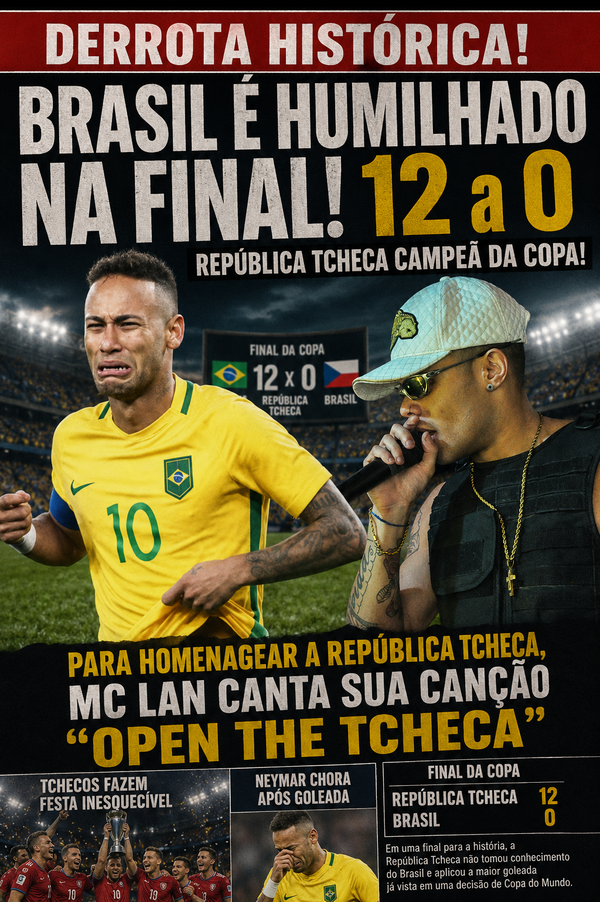

Republica Tcheca é campeã da copa do mundo 2026
Por: Ana Maria Braga
Urgente!!! Acaba de sair a notícia que nesta ultima quinta Republica Tcheca enfrenta o Brasil nas finais e ganha com 12x0 e choca internautas. Após derrota do Brasil o famoso Mc Lan canta sua canção "open the tcheca" para comemorar vitória.